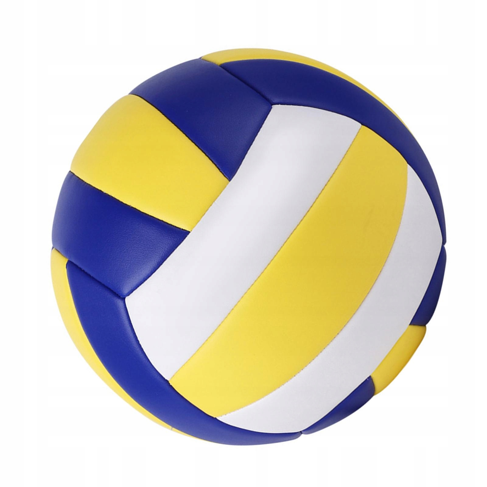
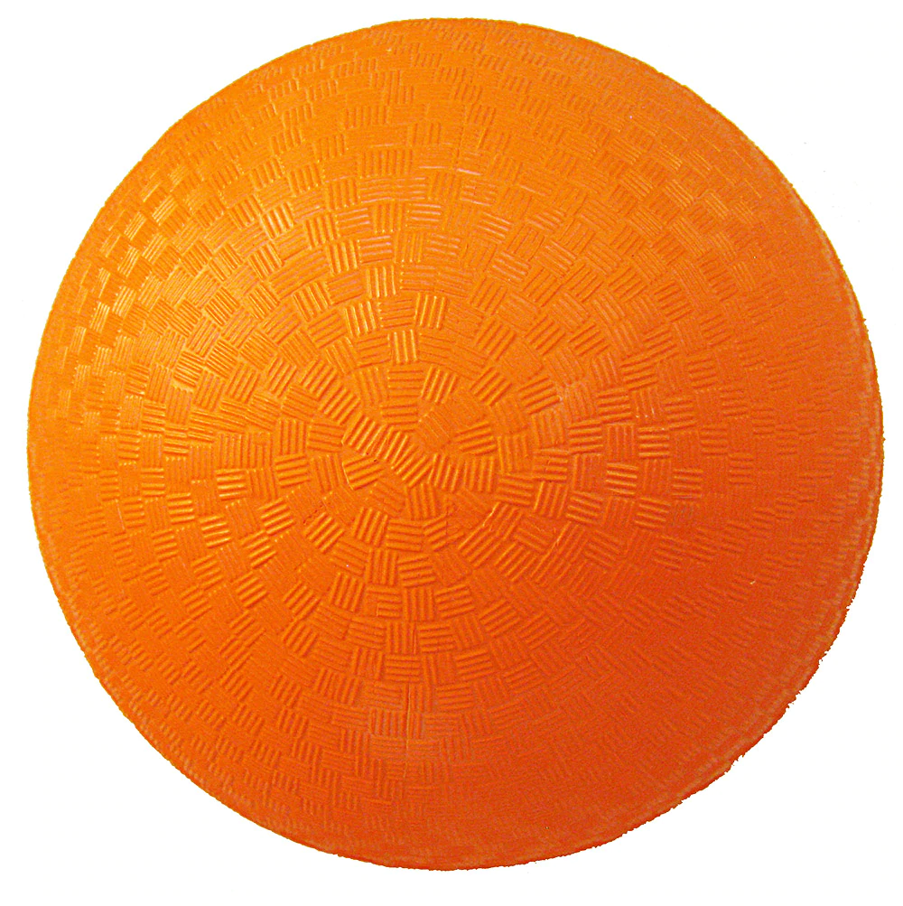

| Piłka | Zdjęcie | Opis |
|---|---|---|
| Kafel |  | Kafel służy do zdobywania punktów poprzez przerzucenie przez pętlę. Ścigający podają go, mogą z nim dowolnie biegać. Przerzucenie kafla przez pętlę daje drużynie 10 punktów. |
| Tłuczek |  | Tłuczek służy do czasowego wyeliminowania zawodnika z gry. Pałkarze zbijają nim przeciwników, którzy po zbiciu nie mogą kontynuwoać gry, dopóki nie wrócą do swoich pętel. |
| Złoty znicz | |
Znicz to piłka tenisowa schowana w ogonku, którego broni niezależny gracz. Zadaniem szukających jest zerwanie ogonka; poprawne złapanie znicza daje drużynie 30 punktów i gdy ta drużyna ma więcej punktów, mecz się kończy. W przeciwnym przypadku gra przechodzi do dogrywki - ustawia się docelowy próg punktów równy liczbie punktów drużyny, która ma ich więcej + 30; gra toczy się do momentu uzyskania przez którąś z drużyn ustalonego progu punktowego. |